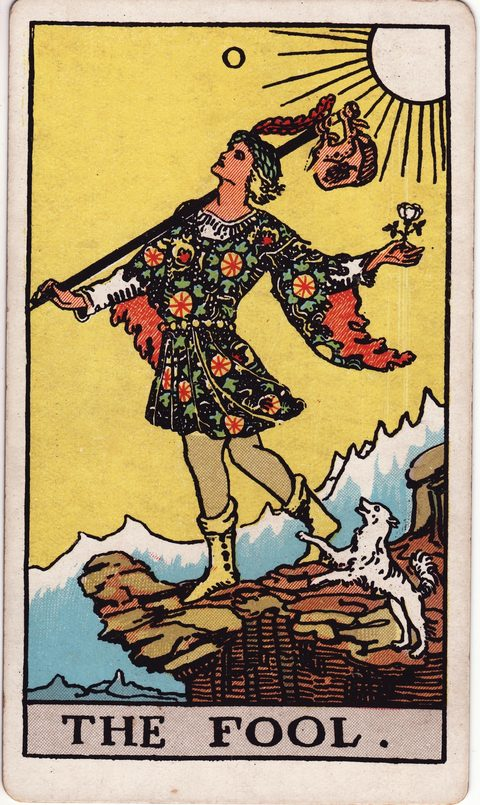
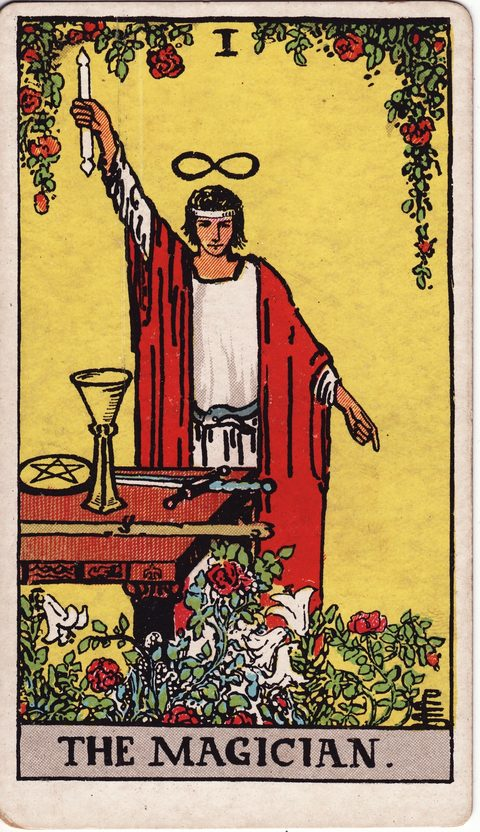
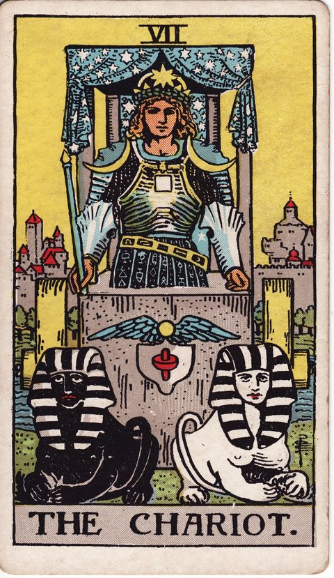
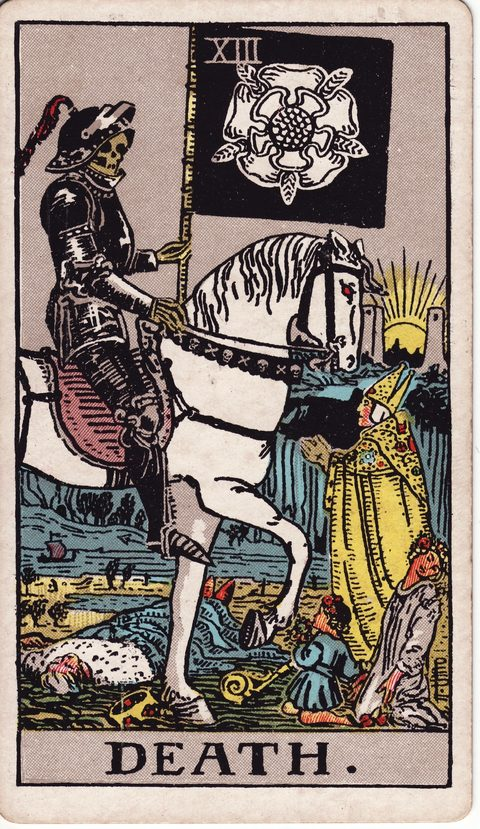
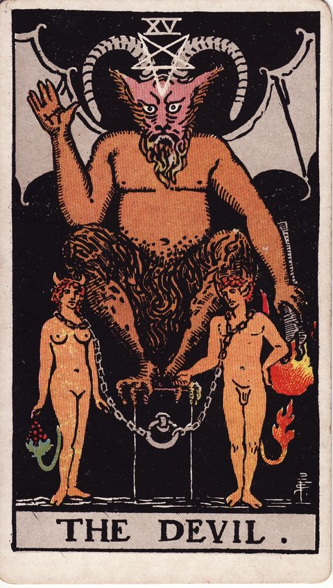
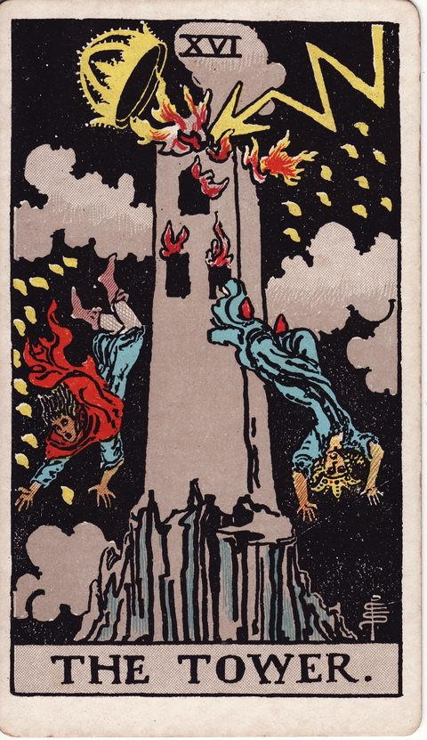
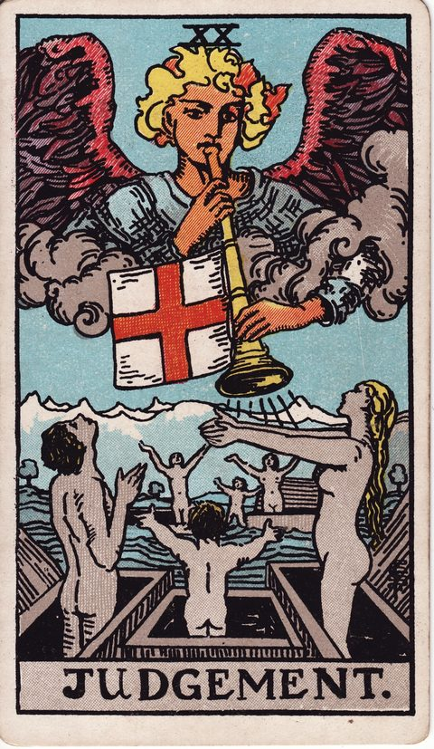
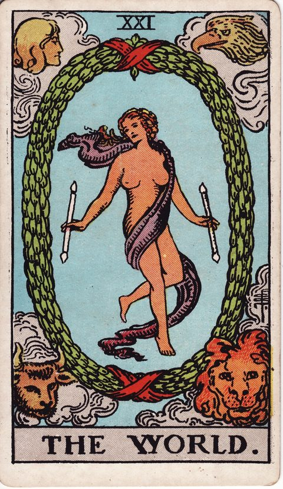

MAJOR ARCANA
Major Arcana meanings (22 cards)
- Major Arcana
- Wands
- Cups
- Swords
- Pentacles
- All 78 cards
The Major Arcana are the 22 cards from The Fool to The World, forming the backbone of the tarot's story. Each one depicts, as a symbol, a stage in life's larger flow — setting out, learning, trials, loss, renewal, and completion. More than everyday events, they tend to reflect questions about your values and the direction of your life itself. When a Major Arcana card appears as you face a decision, it can be a prompt to think beyond the immediate pros and cons and ask, “Does this choice connect to the kind of person I want to be?” Read in numerical order, the cards link together as a single story of growth, and the meanings of the cards before and after each one come into view. Card 0, The Fool, is the figure who steps forward carrying nothing, and the remaining 21 cards are easier to remember if you think of them as the people, events, and states of mind encountered on that journey. The deeper the decision you're torn over, the more it helps to look not just at a single card's meaning, but at its place within the flow.

















Use the viewpoint of Major Arcana to lay your own two options side by side.
Draw a card and organize your decisionMajor Arcana keywords at a glance
- The Fool: upright "A new step, Freedom, Giving it a try" / reversed "Underprepared, Momentum only, Hesitation"
- The Magician: upright "What you can do, Resourcefulness, Action" / reversed "All talk, Spinning wheels, Underprepared"
- The High Priestess: upright "Your inner voice, Thinking quietly, Looking closely" / reversed "Assumptions, Hidden feelings, Missing information"
- The Empress: upright "Nurturing, Kindness, Feeling fulfilled" / reversed "Over-caring, Over-reliance, Exhaustion"
- The Emperor: upright "Responsibility, Rules, Steady progress" / reversed "Imposing, Stubbornness, Too strict"
- The Hierophant: upright "Learning, Asking for advice, A promise that matters" / reversed "Questioning the rules, A way that does not fit, Rethinking"
- The Lovers: upright "Hearts connecting, What matters, Choosing" / reversed "Feelings out of sync, Hesitation, Surface charm"
- The Chariot: upright "A goal, Moving forward, Acting on your own" / reversed "Rushing, Losing direction, Colliding"
- Strength: upright "Gentle strength, Persistence, Calm" / reversed "Low confidence, Swept by feelings, Overdoing it"
- The Hermit: upright "Thinking alone, Reviewing, Your own answer" / reversed "Carrying it alone, Withdrawing, Not listening"
- Wheel of Fortune: upright "The flow changes, A chance, Timing" / reversed "Bad timing, Standing still, Waiting"
- Justice: upright "Fairness, Checking the facts, Balance" / reversed "Unfairness, Jumping to conclusions, Avoiding responsibility"
- The Hanged Man: upright "Waiting, Changing your view, Accepting" / reversed "Enduring too much, Putting things off, Standing still"
- Death: upright "An ending, Change, A new beginning" / reversed "Cannot let go, Fear of change, Putting it off"
- Temperance: upright "The right measure, Combining, Continuing without strain" / reversed "Imbalance, Overdoing it, Strain"
- The Devil: upright "Cannot quit, Strong attachment, Being bound" / reversed "Noticing the bind, Taking distance, Becoming free"
- The Tower: upright "Sudden change, Noticing an assumption, Rebuilding" / reversed "Avoiding the problem, Fear of change, A review is needed"
- The Star: upright "Hope, Regaining energy, A honest wish" / reversed "Hope out of sight, Losing confidence, A gap with the ideal"
- The Moon: upright "Anxiety, Not knowing, Imagination" / reversed "Gradually understanding, Sorting out anxiety, Checking"
- The Sun: upright "Joy, Confidence, Clarity" / reversed "Cannot enjoy it, Expecting too much, Low energy"
- Judgement: upright "Looking back, Starting over, Resolving" / reversed "Regret, Cannot decide, Blaming yourself"
- The World: upright "Finishing, Coming together, A sense of achievement" / reversed "One step short, Cannot close it, Things left undone"